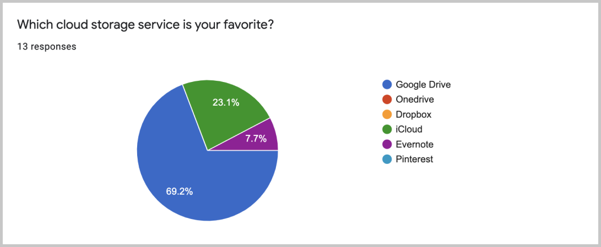
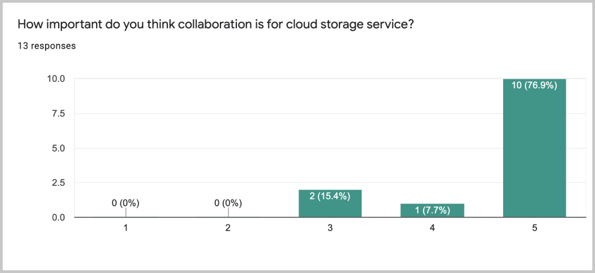

The Cloud storage service is still young in the marketplace, and can appeal to a range of audiences. ClearBox wants to serve as a platform for remote professionals to communicate with their colleagues. ClearBox understands the struggles of maintaining clear communication when working remote, and wants to provide tools to help remote professionals improve their work process.
Role & Duration
UX Designer
Research, Information Architecture, Interaction, Visual design & testing
Aug 2019 - Sept 2019
Problem
My client saw an opportunity to enter into the cloud storage market, and hired our agency to come up with a product that would be able to compete within this market space. The problem faced with making this product was finding a unique approach that would help our product stand out amongst big-name competitors like Google Drive, Dropbox, iCloud, Evernote, etc.
Solution
New Audience: I noticed a trend on job boards where more and more jobs were becoming remote. This would be my target audience.
Create, Organize, Share: I sent out user surveys to understand how users used cloud storage services. The results showed that I needed to build a platform where users can create, organize, and share.
Personalized Platform: Part of ClearBox’s values as a brand was to allow users to feel as if any space that they are in can be turned into their own personal workspace. Users are encouraged to customize their platform, so that the product feels catered to them.
Discovery Phase
At the start of the project, I wanted to learn more about my users and their involvement with cloud storage services. The results showed that a majority of my survey participants were full-time professionals between the ages of twenty to thirty. Google Drive was heavily favored as their product of choice. Participants preferred it because Google Drive was easy to use and worked seamlessly on multiple devices. After establishing my participant’s demographic, I wanted to look into how they were engaging with cloud storage services. Understanding their usage would help me create my user stories. Results showed that half of participants used it for personal reasons while 40% of users used it for work. This gave me the idea of creating a service that would serve as a project management platform.
While going over the project brief with the client, the client had features that they wanted to include in the product. They believed that these features were important for users to have. Therefore I created a separate section in my survey that tested out these features. Some of the features that the client wanted to include were the ability to create files, organize files, share files, and collaborate.


Apart from just looking at positive experiences that participants had with cloud storage services, I also wanted to look at the negatives. The biggest complaint from participants was not having enough storage space, and not enjoying monthly subscription plans. By researching on market competitors, I looked into creating plans that would provide users with more free storage space, and allowed users to sign up with annual subscriptions.
User Personas
With the research and data collected, I began building user personas. These two personas would be identified as potential users.
John
Financial Consultant | Age: 32 | Seattle, WA
Motivation
John’s job requires him to always be on the move. He is constantly traveling to his clients. He works with a team that helps him acquire research and information. John is heavily reliant on team collaboration features on his cloud sto
rage service. He appreciates the ability to gain access to the latest editable documents, and access past versions of documents. He appreciates the ability to access documents offline when he’s flying.
Frustration
Security of files, having the most updated documents, difficulties in retrieving files.
"With all the traveling I do, I want to make sure that me and my team are always on the same page"
Meg
Market Strategist | Age: 27 | Santa Barbara, CA
Motivation
Since Meg moved away from her hometown, she wants to stay connected with her family members by sending photos and videos to one another. Most of the photos she takes is through her phone. Since there a lot of files being sent back and forth, she wants to make sure that all her files are organized by dates and folder names.
Frustration
File organization, running out of storage space, and needs the latest sync
“I want to make sure that all files are uploaded and organized within files/folders. This way my family can have easy access to photos and videos"
Competitive Analysis
I had an ample amount of research done on potential users, and wanted to transition my attention to competitors in the market space. The three competitors I looked into was Google Drive, DropBox, and Evernote. As I looked into their strengths and weaknesses, I noticed a pattern. For most part, the features provided to users were similar in the three competitors. However, what made them different was their target audience, and to whom they marketed their platform for. Google Drive’s targeted every day users, but specifically to small business owners. DropBox seeked out creatives by marketing their feature DropBox Page which allowed teams to collaborate together on projects. Lastly, EverNote was geared towards students, and focused their product on note taking. What I took out of this research was that I needed to find my own specific audience.
I took what I learned from my users and martket competitors to start building out my user stories and user flows. User stories helped me prioritize the main features that would be included in the product. User flows were important to see the best way in navigating users to achieve goals. At this part of the process, I had created my MVP (Minimum Viable Product).
By establishing my user flows, I started sketching out how the screens would look like. For each user flow, I did three to four different iterations. This helped me find the best possible design layout. I used Figma to digitally design these sketches into wireframes.
Building my high-fidelity wireframes prepared me to begin prototyping and testing. The purpose for testing was to see if users would be able to navigate within the product with close to no direction on my end.
The first steps in branding was identifying my target audience, which in this case were remote professionals. Having worked as a freelancer for five years, I understood that one of the key struggles I had was not feeling part of a whole. Oftentimes, details and direction of a project can get lost in translation. All I wanted was more clarity and transparency. I wanted those two words to reflect the values of this product. I liked the word “Clear” used in the product, for it could be interpreted in many ways. For some, it can mean having full transparency, which can eliminate points of cloudiness. I went with the name ClearBox because it represented the idea of creating your own personal workspace and being able to feel part of a whole.
Logo Design
From the word clear, I was able to branch out to other words that I helped me identify the brand. Some of these words included being transparent, reliable, adaptable, useful, motivational, etc. I used words created from my mind mapping execise to start sketching logo ideas out. I wanted a logo that showed transparency and layers. The logo needed to reflect the name of ClearBox, as well as, incorporates elements of a workspace in a minimalistic way. The logo would come off as professional, and so I created the logo primarily with geometric shapes.
Color Palette
The next step was establishing the mood board which would come to aid my decision for the color palette. This was personally my favorite part of branding. I searched for images that I thought best represented our product, yet still tied in with the words from the mind map. I drew inspiration from offices that had a lot of natural light, organic natural woods, and plants. I liked the mix of greenery, natural organic material, and industrial spaces all merged together. I used the eye picker to select certain colors that popped out to me. The main accent color that I chose for ClearBox was a fresh green. I wanted to stay away from blue because it is often a color used in software products. I wanted to make the product visually unique. It also served as a visual challenge for me to work with a color which can be seen as opposite from technology. However, green often reflects growth, and I believe that is what ClearBox is. It's a platform built to serve a new incoming line of working professionals.
User Testing Phase
The idea behind the first draft of the high fidelity mock-up was to incorporate stock photo images of work spaces and young working professionals. As stated above in the branding, I used green as an accent color. I also incorporated some warmer/neutral tones to help balance out the whitespace on the screens. As I added this style throughout the rest of the product, I wanted to do a quick preference testing to see how users felt on some particular screens that I had some design curiosity in. I tested out different color variation, layout, and button placement. Below are three screens that I tested, which 2 designs each:
Preference Testing
What color do you prefer? 83% of users chose the second design.
Where do you prefer button placement? 84% of users chose the first design.
What layout do you prefer? 67% of users chose the first design.
Based on the preference testing, an overwhelming amount of users were more into the dark blue menu for the dashboard. This would be a major change in my second draft of high-fidelity mockups. I was also able to also execute the other screens changes into my second draft.
User Testing Part 2
I decided to do a second round of testing in order to see if the changes done from my preference testing would change the opinions of these new users. The results of the second usability testing would drastically change the look of my design. A number of users had complained that the “My Files” tab and “Collaboration” tab were too similar in look and functionality to one another. The only difference the screen had was the ability to view notes and screen share for collaborative projects. Originally in my mind, I thought collaboration should be a separate tab in itself, because it was a highly sought out feature from my user surveys. However, the way I designed it out didn’t make it too different from “My Files”. Therefore, I decided to combine the “Collaborate” tab into the “My Files” tab. All files that are shared will be allowed the feature to share notes and screen share.
The other comment that was made was that settings was difficult to find. Users didn’t seem to notice that the profile image could be interacted with. Since I had some extra real estate on my left menu bar, I decided to add a tab that featured “Settings”. This way users had two ways of accessing “Settings”.
Another user had commented that by adding a breadcrumb trail to my screens could help users track their steps in the product. The breadcrumbs would allow easy shortcuts for users to jump to different screens. With the excessive amount of informationa and file digging that users can potentially get into, it would be a good idea to have some type of signifier that brings them back to their previous pagese.
One comment that caught me by surprise was when a user couldn’t see how the branding was shown in the product itself. The user said the landing page of the website wasn't reflected well in the product. She said ClearBox didn't have anything that made it feel like it was a service used to establish better communication. She wanted to see more transparent effects that would match the style of the logo. When this was brought to my attention, I realized that I had left out a crucial part of my branding out. I originally named the product ClearBox because it was a platform in which remote professionals could feel less alone. They would be able to customize the look and feel of their workspace to match whichever setting they were in. In my final iteration of my design, I seeked to make the product more personable by allowing users to change their background skin on the settings page.
Customize Your Workspace
Since remote professionals aren’t tied to any space, the ability to customize their workspace allows users to change their settings where ever they are at.
Project Collaboration
Team sharing made easy. With two clicks, users can easily add in new team members to projects. Users are also allowed to view activities of actions done to shared projects.
Document Creation
Need to create documents to share? In ClearBox, users have the options to create different types of documents. All documents created in ClearBox will have offline editing abilities and automatic saving features.
I believe that I identified a great target audience for the product. I was able to identify patterns in how more jobs are becoming remote. I used my observations as an advantage to finding my audience.
In considering future developments of the current product, I want to send out surveys targeting remote work professionals. From the surveys, I’m hoping to create more features that are geared towards my specific audience. I liked how I used my personal experiences as a freelancer to help my drive ClearBox’s branding. In the next steps of design, I’d like to place my focus in having the product be more malleable to the user.
I believe these goals listed above can be achieved through user research, ideation, prototyping, wireframing and usability testings.